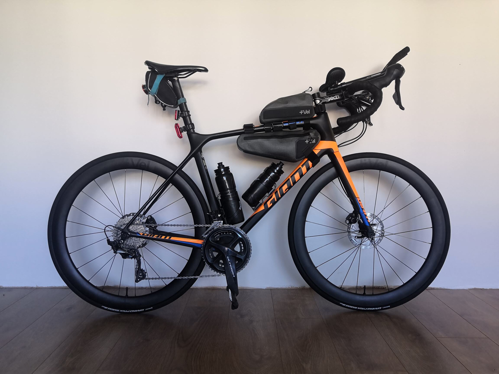
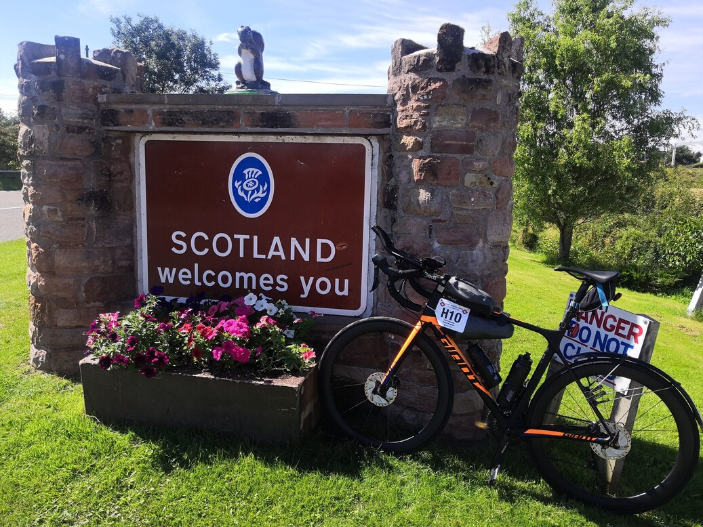

This blog entry is an extremely long, rambly collection of words mainly to record my thoughts and experience as something to look back on in the future. I've split it into two parts (second part here), but brace yourselves for a long read!
I first heard about LEL from a chance reading of Darren Franks blog about his 2017 effort. In it he described his experience cycling ludicrously fast from London to Edinburgh in one hit, before turning back around and returning to London. He documents his battles with severe sleep deprevation, mouth ulcers, hours of headwinds, lashing rain and the beginnings of hypothermia. In both running and cycling I’ve always had a preference for the longer stuff so, despite all the glaringly obvious warning signs in his blog post, when I first read it I thought "Ah balls. I’m definitely going to sign up for this". I don’t know why I like long stuff, but the idea of riding 1500km with minimal rest seemed exciting rather than horrendous.
The pandemic made me realise that 1)I hate swimming and 2)I'm awful at swimming. This led to the epiphany that I can just do things I only enjoy (madness I know...). This has led me to shock the world and retire from triathlon, instead just focusing on running and cycling for the past couple of years. I’ve also since moved out of central London and have access to running trails and nicer roads close to my door.
Although I’ve kept up some cycling, I’ve spent the majority of my time running. Since 2020 pretty much all my events have been running - I ran the Eden Valley 50km Ultra (and somehow won), the Brighton half marathon, had a great time at the Rabbit Trail Weekend (and took home the most phallic trophy ever created) and grumpily run the first 50km of the North Downs Way 50 miler before dropping out.
On the other hand my cycling events have been few and far between, with the only things of note being a solo trip to see a friend down in Cornwall, riding there in two days and back in one, as well as doing the Dartmoor Classic sportive with the same friend in mid 2022. Both of these were really enjoyable and the Cornwall trip confirmed my suspicions that I am more than happy riding my bike all day. This indicated that, despite a low amount of experience with ultra distance events, the decision to sign up for LEL probably wasn’t too reckless. My main concern was getting a decent level of cycling fitness back so I could complete the event.
After my final running event (which annoyingly was the NDW50 DNF...) I switched to predominantly cycling and started to build fitness in the 11 weeks before LEL. Obviously this is not a lot of time, but I hoped the years of training and consistent but low amount of cycling I had been doing would provide me with a decent base.
For previous events and races I had always followed a very structured training plan but as I’ve gained more experience I’ve learnt what works for me so decided to go with a more "fly-by-the-seat-of-your-pants" approach. My vague training plan for this block was:
Although I rode with a power meter and did sessions outside, I never actually tested for FTP and mainly guesstimated zones by feel. This seemed to put me in good stead and I went into LEL feeling the fittest I’ve ever felt on the bike. I also found that I had far more fun with this approach compared with religiously following a training plan (and spending a lot of time on the trainer). I feel like I train quite sensibly, and know I’m not the type of person to smash myself into the ground day after day, so the lack of a proper training plan thankfully didn’t seem to hold me back. The final few rides were a confidence boost, with two notable sessions being 180km taking in the most horrific Surrey hills I could find, and a faster, shorter ride where I put out a normalised power of 270w for 2:45. I averaged around 12 hours a week, so definitely could have ridden more, but overall it felt like it got me in good shape.
I also did all my rides with my bike setup for LEL. I was planning on riding with a fairly light setup, mainly due to the provided drop bags, so I went with a frame, top tube and small saddle bag for luggage. This turned out to be perfect, and if I ever get a dynamo hub I think I could reduce this even more. I opted for clip on aero bars which are a godsend. If you are reading this and considering long stuff (where aerobars are allowed) then I would strongly advise fitting aero bars and getting comfortable riding in them for hours on end. The difference they made for average speed and comfort, especially as I got more tired, was absurd.
When browsing the Facebook group prior to the event I did start to worry that I might be massively winging it and setting myself up for failure. Several people were posting bike setups indicating they were packing the proverbial kitchen sink, and I worried I would get caught out unprepared somewhere out on the road. With hindsight I shouldn’t have worried - with the incredible support on the event you’re never more than ~100km away from food, toilets and a bed so unless you are planning on sleeping by the side of the road you can get by without too much. I also did not envy the people with 20kg+ setups when climbing over the Pennines.
I had done a small amount of planning beforehand but with so many unknowns - how would I handle sleeping in the dorms? how would my body hold up to constant riding? would I want to ride more than the minimum? - I heeded some advice of not over planning. I did however put together a couple of loose plans for the ride. Plan A was the sensible "even split, take the full time allowed" approach that involved me riding around 300km a day on average. Plan B was what I was calling the "full send plan", which involved me riding a punchy 450km on day 1 and trying to get home in under 100 hours. I figured I would see what plan I would go with whilst on the road, but I also knew that I did not want to finish it and feel like it was just a nice tour of the UK, and had an inkling I may opt for the latter... In the build up I had listened to an episode of "The Hidden Athlete" podcast with indi-pac and trans-am winner Abdullah Zeinab and his mindset is something that I related to and found inspiring. I figured I would much rather risk overcooking things and rather than play it safe.
After registering the day before (and forgetting to pick up a GPS tracker I’d hired, much to the annoyance of my family) I was all packed and ready to go. My 7:30am start time meant that I had a fairly "leisurely" morning, waking up at 5am and having the time for breakfast and a coffee before driving over with Rachel. I was partially nervous, but mostly really excited to get going.
The start was fairly underwhelming given the scale of the event, and it is one thing I really love about audax events. No one is there to show off, and there is an acute awareness that we’re all a bit weird, so there is not really a big song and dance. People are there because they love it and everyone just gets on with it.
Just before 7:30 we all got in our starting pen and after a brief "good luck. see you in a few days'' from a marshall we set off. I had previously decided I should stay in the pack for the first hundred or so kms and avoid getting too excited. There was over 1500km to ride and everyone would be feeling good at the start so overdoing it at the beginning would be stupid and possibly jeopardise the entire ride...
So obviously 50 metres in I decided things were too slow and I should up the pace, and rode away from the group. Thankfully another rider (Josh) from my group tagged along and we ended up riding together. He turned out to be a bit of a monster on the bike, and we ended up teaming up for the whole day. We spent the next few kms riding together chatting, and slowly collected a large peloton behind us. The size of the group ebbed and flowed as we picked up new people and others dropped off, ranging from 5 of us to, at one point, a large group of 16!
After a short while we arrived at the St Ives control which was to be the first of many occasions where I was blown away by the kindness and support of the volunteers. As soon as I was off my bike I had a volunteer offer to take my bottles and fill them up for me, just as another volunteer was chaperoning me to the check in desk and food. We had a very quick stop, downing beans on toast as quickly as we could, before ploughing on to the Boston control for another quick stop.
Our peloton dwindled to myself and Josh as we approached the fens (nicknamed "cycling purgatory" due to the straight, flat roads and complete lack of variation in scenery - I can confirm this nickname is appropriate). We began leapfrogging packs of riders from earlier start groups and in the process picked up another strong rider from Wales called Euros. Our trio were of similar pace so we worked really well together, trading turns on the front and chewing through the kms. Overcoming the cross-headwind through the fens was made far easier in our small group compared to solo, and we arrived in Hessle at 300km, in around 11.5 hours. It was here I accessed my first drop bag and picked up one of my homemade sports drink mixes to add to my water bottle. This highly scientific, complex concoction consisted of a ziplock bag of table sugar with a pinch of table salt added to it - highly recommended if anyone is looking for a cheap way of getting carbs in.
It was still light and all three of us were intending on banking some distance on the first day. As we pressed on towards Malton, I broached my "full send" plan to the group which involved riding a total of 450km to Scotch Corner Travel Lodge and getting a proper bed. The response was mixed and there was a concern of overdoing things, but the other two guys seemed mildly keen for it. However after arriving at Malton, 370km in, cracks in the group were starting to form. Euros decided to call it a night and rest up there, and Josh was feeling tired, but after some contemplation decided operation "full send" was a goer. He had ridden LEL in 2017 and figured we could keep a good pace and get there just after midnight so we pressed on into the night.
What then proceeded was a "character building" route in the dark along some sawtooth-like, slow, narrow country lanes in the North York Moors. The 2022 route was different to previous years and these roads were a new addition, so our pace was far slower than predicted. It was pretty tough going and the later it got, the more the focus shifted away from enjoying the experience to getting it over with. Thankfully there were a few moments that snapped me back into a more positive mindset - my most memorable being stopping to eat a flapjack deep into the moors, and looking up to the most star filled night sky I’ve ever seen. It was completely silent, with no riders or cars anywhere near us, and it reinforced my feelings that I was lucky to be doing this and any previous or upcoming suffering was worth it.
We eventually reached our destination at around 2am pretty spent, 2 hours after our predicted arrival time, with Josh presumably having a much lower opinion of "operation full send" than a few hours prior. After stocking up on snacks from the nearby petrol station and showering, I got into bed and set my alarm for 4 hours, half excited for the next day but also slightly anxious about how wrecked I would feel...
I had set my alarm to give myself a very generous 5 hours of sleep, but ended up waking long before the alarm. I’d had one of the worst night’s "sleep" of my life which consisted of uncomfortably shuffling about for 3.5 hours as my body attempted to process what I had thrown at it. I nervously got out of bed and assessed the damage, fully expecting to feel like I had been hit by a truck, but surprisingly things were not awful. I was tired and my legs ached but apart from that I felt good. After faffing around for a bit I ate breakfast (an entire pack of cookies from the petrol station) and got back on the bike. I had agreed with Josh the previous night to just do our own thing so I was solo by now. It was at this point that I had my first inkling that I might not only finish this, but have a great time doing it. Apart from some expected achy legs I was feeling good, I was riding my bike in the morning sunshine and had just eaten a pack of cookies for breakfast. I was living the dream!
I rode the 30km to the Barnard Castle control and ate a second, more conventional breakfast. There were a few tired faces at this control, many from the 5am 100 hour group, who had pushed on the first day to make it to Barnard Castle before sleeping. I then set off for what was to be the hilliest section of the ride over the Pennines.
The initial route was up and over Yad Moss which is a manageable, gradual ~15km climb. Unfortunately, a couple of weeks before the event the organisers had learnt that road works at the top of Yad Moss were planned to start exactly when we planned on riding over it, so a diversion had been put in place. This only added a few extra kms, however it turned the fairly benign Yad Moss climb into a brutal rollercoaster consisting of two extremely steep climbs and descents. This was made even more fun by a block headwind for most of it, but as I was still feeling somewhat fresh I just got my head down and cracked on.
The climbs were a bit spicy at times but I had a 11-34 cassette and a compact chainring, so thankfully could crawl up anything without the power getting too crazy. After the first climb I was treated to a fairly straight and very fast descent, which saw me clock 85km/h. I’m extremely glad I was doing this in the morning with good light and dry conditions as it would be pretty lethal otherwise. I was having a great time on the downhills, blissfully ignorant of the fact that I would be riding the opposite direction in less than 48 hours... (I thought the route went a different way). I did get a temporary glimpse into the future when the wind and speed caused my sunglasses to fly off my face at 60km/h and I had to stop, turn around, and ride back up the hill to fetch them.
After what I would describe as an "uncalled for" amount of climbing I finally reached the Brampton control, which signalled a good chunk of the brutal northerly climbing done. After getting some food and water I went back to my bike, and bumped into my "full send plan" riding buddy Josh as he was arriving. It turned out he had gotten a worse night's sleep than me and left earlier in the morning. He was also suffering from some knee and calf pain and was talking about scratching. I gave him some encouragement to press on and see how it goes, but he was an experienced rider and knew he would obviously be the best judge. Unfortunately that would be the last time I would see him as the knee and calf pain got worse and he ended up dropping out.
The ride to the Moffat control was pretty uneventful, with most of it spent on pretty flat wide roads in the aero bars, trying to hide from the wind. I arrived at Moffat, 650km into the ride, and quickly learned that this control meant business. Being vegan had slightly restricted my choices so far, but each control had at least one good main meal option. Moffat’s catering was on a whole different level, with vegan bars, flapjacks and fruit laid out on each table, and a slew of options to choose from. Naturally, I proceeded to get overly excited and eat a disgusting amount of food, the highlight being a vegetable biryani with crispy onions and coconut yoghurt. I later learned that I had not seen the vegan chocolate cake on offer, which I am still slightly gutted about!
After waddling out of the control I got chatting with a Belgium rider, Daniël, who was talking about scratching. He had left in the 5am group the previous day and ridden 480km to Barnard Castle on day 1, but was really suffering now and had struggled to maintain 20km/h so far on day 2. He decided to keep going and see if things improved, so we teamed up and set off for Edinburgh, almost immediately climbing up "Devil’s Beeftub". It was great to have someone to chat to and I quickly discovered that Daniël was an incredibly strong and experienced rider who had ridden a tonne of different ultra events, including Paris-Brest-Paris. He had also taken a similar approach at Moffat and made the most of the food on offer, so was thankfully beginning to feel better. After reaching the summit we were then treated to a glorious, smooth, fast descent which we made the most of by trading turns on the front, getting down on the aero bars and smashing it.
As we approached the outskirts of Edinburgh I was giving an extremely well thought out, interesting monologue to Daniël about the negatives of chip-seal roads when, as if by divine intervention, my front wheel smacked a rock in the middle of the newly chip-sealed road we were on. The impact felt pretty severe but I was still rolling along okay so I breathed a sigh of relief and thanked my tubeless tyres for saving the day. However, when I turned a corner a km or so up the road I realised I had celebrated prematurely - my tyre was now completely flat.
We stopped to assess the damage and discovered the worst outcome - there was a sidewall puncture, although luckily a relatively small one. There was no hope of the sealant sealing it so for the first time since using tubeless tyres I had to resort to putting in a tube. When attempting to fit one the realisation dawned on me that I’d packed standard valve-length tubes which were too short for my 50mm rims. Daniël (who was brilliant in this situation and did everything he could to help despite me insisting he should press on) also only had similar tubes. I was stuck on the side of the road in rural Scotland, well and truly up shit creek without a paddle. I was cursing my schoolboy error and lack of preparation. In the two years I had been riding on tubeless tyres I had never gotten a puncture that didn’t seal itself so the idea of actually doing a dry run of fitting a tube before LEL had slipped my mind. I was starting to worry that my entire event may be sabotaged by a combination of a basic mechanical and my own stupidity, and began thinking about my options. I knew I had a large time buffer and could potentially get to Edinburgh, wait for a bike shop to open the following morning and attempt to redeem my ride, but it was getting dark and we were nowhere near the city, so this option would still be far from ideal.
Just as major panic was about to set in we were joined by a group of German LEL riders who stopped to see if I was okay. I explained my predicament and, presumably after thinking to themselves "Dieser Typ ist ein verdammter Idiot", they produced a long-valve inner tube. We fitted this and to my great relief the tyre held air - I was back in business! I felt slightly embarrassed at my incompetence but was mostly overcome with relief and appreciation and profusely thanked them. My run in with the rock had wasted a good 20 minutes, but I had dodged a bullet and was lucky to be back on the road. It was a real wake up call that finishing wasn’t guaranteed and hammered home the need to savour the experience.
We arrived at the halfway point of Dunfermline at around 10pm and had to decide between getting some sleep or pressing on into the night. I knew pushing on into the night without more backup tubes would be risky and the next stage started by going through central Edinburgh which would be less than ideal as the Fringe festival was on, so we figured resting up here and leaving first thing in the morning was the best plan. I grabbed some food, managed to snag another tube off a lovely volunteer and then headed to the dorms.
See part 2 here.